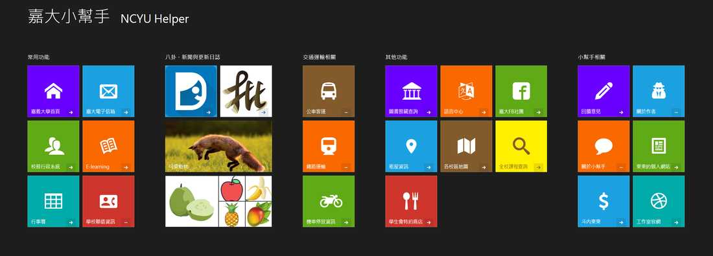
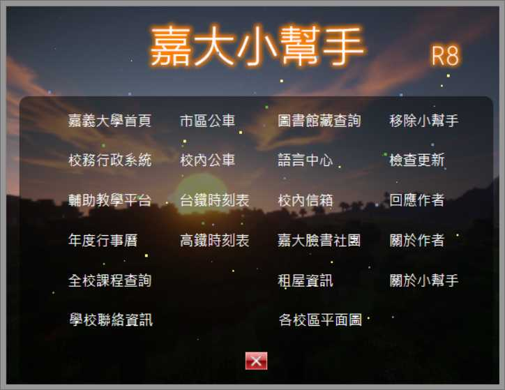

自製工具
停止維護的工具或版本不再開放下載。
加菜小幫手網頁版 Stock Helper
加菜小幫手整合了投資常用的各項功能，尋找資訊不再麻煩。
歡迎您光臨「加菜小幫手網站」（以下簡稱本網站），任何瀏覽網站的人士，須自行承擔一切風險，本網站不會負責任何因瀏覽或使用本網站而引致之損失。本網站不會作出任何默示的擔保。本網站承諾力求網站內容之準確性及完整性，但內容如有錯誤或遺漏，本網站不會承擔任何賠償責任，所有本網站內容，將會隨時更改，而不作另行通知。本網站可隨時停止或變更網頁資料及有關條款而毋須事前通知用戶。本網站不會對使用或連結本網頁而引致任何損害（包括但不限於電腦病毒、系統固障、資料損失）、誹謗、侵犯版權或知識產權所造成的損失，包括但不限於利潤、商譽、使用、資料損失或其他無形損失，本網站不承擔任何直接、間接、附帶、特別、衍生性或懲罰性賠償。本網站可能會連接至其他機構所提供的網頁，本網站不會對這些網頁內容作出任何保證或承擔任何責任。使用者如瀏覽這些網頁，將要自己承擔後果。是否使用本網站之服務下載或取得任何資料應由用戶自行考慮且自負風險，因前開任何資料之下載而導致用戶電腦系統之任何損壞或資料流失，本網站不承擔任何責任。
本網頁於電腦或手機上均可使用！
發布日期：2020/11/14
更新日期：2020/11/14
嘉大小幫手網頁版 NCYU Helper for Web Browse
 嘉義大學網頁的各項常用功能分散於各個行政單位的頁面中，對於學生來說實在不便，本網頁可讓各位快速開啟學校內常用的網頁與資源，省去慢慢找又找不到的困境。
本網頁於電腦或手機上均可使用！
發布日期：2018/11/25
更新日期：2019/08/28
嘉大小幫手 R8 NCYU Helper R8
 嘉義大學網頁的各項常用功能分散於各個行政單位的頁面中，對於學生來說實在不便，本網頁可讓各位快速開啟學校內常用的網頁與資源，省去慢慢找又找不到的困境。
This tool can help you open school website easier.
不會安裝與使用請看使用說明，需要移除舊版本再安裝才能正常執行！
發布日期：2018/10/01
You need to remove old version and install this version to execute.
Release date: 2018/10/01